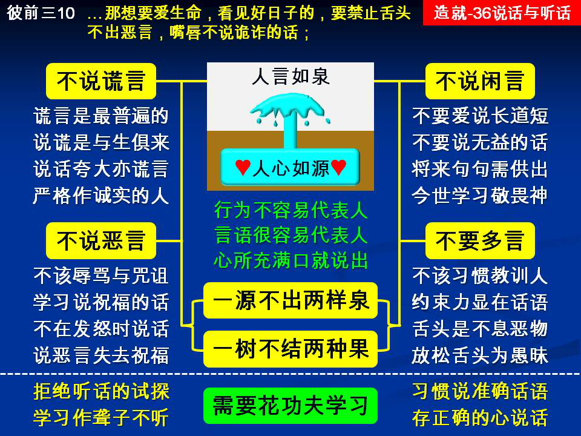

诗歌：301首、补 414首
重要经文：
诗篇三十八篇十三至十四节：但我如聋子不能听，像哑吧不能开口。我如不听见的人，口中没有辩驳。
约翰福音八章四十四节：你们是出于那父魔鬼，你们父的私欲，你们愿意行。他从起初就是杀人的，并且不站在真理中，因为在他里面没有真理。他说谎是出于他自己的私有物，因他是说谎的，也是说谎者的父。
彼得前书三章十至十一节：因为“那想要爱生命，看见好日子的，要禁止舌头不出恶言，嘴唇不说诡诈的话；也要离恶行善；寻求和睦，竭力追逐，
纲目要点：
壹 言语代表人的心：
一 不说话的时候，不知道他的灵如何。
二 今天要从新作起，连说话都得学过。
贰 说谎的人都是撒但的儿女：
一 谎言最普遍。
二 什么是谎言。
三 要严格的学作诚实的人。
参 闲话不能说。
肆 恶言不能说。
伍 要受约束不多话。
陆 我们从起头就学习如何说话并且注意听话：
一 我如聋子不听。
二 要花工夫学。
信息选读：
言语代表人的心
人的言语，是人生活中一个很大的部分，也是一个很要紧的部分；主耶稣对我们说，人心里所充满的，口里就说出来。 （太十二 34。）所以人的言语乃是表明他的心，乃是表明他心里有什么东西。人的行为不容易代表人，人的言语很容易代表人。许多时候，人的行为能够给人有错误的领会，错误的看法，错误的断案。但是，人的言语很容易代表人是如何，因为人的言语很不容易约束，很不容易管住。凡人心里所藏着的，心里所充满的，口里就说出来。就是口里要欺骗，口里要说谎，也是显出心里有欺骗，心里有说谎而已。一个人话不出口的时候，我们不容易知道他的心；一个人一开口，就显露他的心。一个人不说话的时候，不知道他的灵如何；一说话，你就能够借着他的话摸着他的灵，知道他在神面前是怎样的情形。所以，我们信主之后，要从新学怎样作人，怎样说话。已往所有作人的方法，作人的情形，完全不行。今天要从新作起，连说话都得学过。
说谎的人都是撒但的儿女
一切的谎言都应该从神的儿女中除去。谎言如果还留着，在撒但那里就有一个把柄，叫他能够抓住你。一个人若没有学习拒绝谎言，他就不知道自己多会说谎。人越肯起来学习拒绝谎言，就越发现他是多会说谎，连他的心意倾向都是要说谎。世界上的谎言是多过于我们所预料的。连我们自己的谎言，也是多过于我们所预料的。你如果没有学习拒绝谎言。你就不知道谎言有多少。当你在那里拒绝谎言的时候，你就看见谎言是何等的多。不只在世界上是何等的多，并且在你这个人身上也是何等的多。这是最可惜的事，就是在许多神的儿女之中，好像谎言是不可少的事。这是最可怜的事，谎言在神的儿女之中，竟然也有地位！主所说的话，在这里是够重的，也是够清楚的，一切说谎的人都是撒但的儿女，撒但乃是一切说谎之人的父。如果撒但的这一个种子还在神的儿女身上，这是全世界最可怜的事！
什么是谎言
一会儿说对，一会儿又说不对；你知道这一个人是说谎的。凭好恶说：我们把我们所喜欢的说出去，把我们所不喜欢的藏起来；把我们用得着的说出去，把用不着的藏起来，这就是说谎。许多时候，人在那里故意的把事情留一半不说。许多事情与别人有利的，与对方有利的，与他所不喜欢的人有利的，他自私的心把这些话留下不说。而把没有利益、有害、能伤人的拿来说，这是说谎。许多人说话不是凭着真理，也不是凭着真实，乃是凭着好恶。许多人说话不是凭着事实，乃是凭着情感。加进自己的意思：有许多的事，经过一个人传给另外一个人，为什么会改变？常常一句的话，只要传了三四个人，这一句话就完全改变了。为什么？因为每一个人都把自己的意思加进去，而不是寻求那一件事实是如何。你不寻找事实如何，你在那里把自己的意思加进去，这是谎言。
夸大其辞也是一种说谎
还有一种说谎也是普遍的，在召会里也很普遍，就是夸大其辞。数字不够准确，话语不够准确，喜欢用大的字眼，喜欢用厉害的字眼，喜欢说大话；请记得，这些都是说谎，因为这里面不真实。你今天要试一个弟兄，一个姊妹，到底他的心在神面前如何，你只要对他说一件事，叫他去传。你马上就知道，你马上就寻出来，他的存心在神面前如何。一个敬畏神的人，学过功课的人，受神对付的人，他看见说话是一件大事，不敢随便的说，不敢随便的传，并且注意要说准确的话。一个在神面前从来没有受过对付的人，没有受过主的管教的人，你一对他说，叫他去传，他就很起劲的去传。在传的里面，你就看见他是一个轻浮、虚谎、不诚实的人；他可以把许多自己的话加进去，又把许多该说的话瞒着不说。没有一个说谎的人是能作神话语的执事的。说准确的话的人才能读圣经。因为神的话是一点一画都不错的。像我们这样马虎的人，也不知道把神的话丢了多少点，多少画。
闲话不能说
有的人一天到晚就是搬弄是非，一天到晚就是说东家短、西家长。他在那里说毁谤人的话，说拆毁人的话，说批评人的话，说断定人的话。他在那里说许多污秽肮脏的事，说各种不好的事；这很明显，这一棵树是坏的。今天的难处，在神的儿女中，就是不能凭着话语来审判人。主告诉我们说，善的人，从他心里的善发出善来；恶的人，从他心里的恶发出恶来。心里所有的，口里就发出来。树如何，果子也如何。如果有弟兄，有姊妹，一天到晚就是在那里传不好的话，传污秽的事，传批评的事，传罪恶的事；你们不要向他说，这一件事是真的或是假的，你们要告诉他说，传这样的事，就是不够清洁的。我们要知道说，神的儿女的口，话语就是他的果子。不是所有的事实都可说。这不是谎言不谎言的事。也许这是事实，的确是事实，但这不是我的果子。也许这是真的，但我不能说这话。
从起头就学习如何说话并听话
我告诉你们，这是一件大事，也是专一的一步，应当好好的走过去。这一件事不是很便宜的，是要花许多的工夫才能够有一个说准确话语的习惯。我不相信，人一信主就能那样简单的胜过。我自己知道，要说准确的话比什么都难，一不小心，话语就错，存心就错。比方说谎：不准确的话是说谎，存心要人误会也是说谎。话语说的不错，但是故意要人领会到别处去，也是说谎。初信的人，要从起头就注意这一件事，下工夫在这一件事上。有一件事我觉得非常希奇。有许多弟兄们那样随便的说话，也有那么多人在那里听着而没有感觉。请记得，什么时候你能听不正当的话，你有毛病！听而接受，听而不拒绝，在这里有大毛病！我们要学习拒绝污秽的果子。要知道，任何的毒摆在神的儿女中间，都能够散开，把人带到不敬虔、背叛、放松的地步。求神施恩给我们，怜悯我们，叫我们从起头就学习如何说话！ （摘自初信造就第三十六篇）
课程复习：
一 为什么今天要从新作起，连说话都得学过？
二 什么是谎言？
三 为什么夸大其辞也是一种说谎？
四 为什么闲话不能说？
五 请说明从起头就学习如何说话并注意听话的重要性。
辅助图表：
